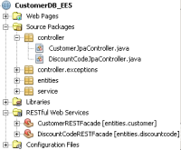
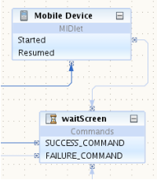

Click image for fullscreen preview
Click image for fullscreen preview
The NetBeans IDE assists you with web service interoperability, security, reliability and transactions.
Standards-Based Web Services DevelopmentThe NetBeans IDE supports Java EE 6 and Java EE 5, including the JAX-WS 2.2, JAX-RS 1.1, and JAXB 2.2 web service standards. You can work with GlassFish Server Open Source Edition, Oracle Weblogic, Apache Tomcat, JBoss, and many more. The code completion functionality includes annotations that you can use in your web services. |
|
RESTful Web Services
|
 |
SOAP-based Web ServicesUse the Web Services wizards and Web Service Visual Designer to create and develop web services from Java classes or WSDL files. The IDE provides tools to work with Web Service annotations (Web Services Metadata for Java). Java classes annotated with @javax.jws.WebService annotation are automatically recognized as web services in a project. The IDE provides support for the JAX-WS 2.2 runtime in various features, such as the Visual Designer or Web Service Customization editor. NetBeans IDE 7.2 extends the Visual Designer to Maven projects. Convert SOAP based web services to RESTful service resources by using the action available in the web service node. Use the Web Service Customization editor to create asynchronous web service clients. |
|
Reliable, Secure, Transactional Web ServicesWsb Service Interoperability Technologies (WSIT) are directly available from the Web Services Designer. Use the Metro 2.0 (JAX-WS 2.2) support in the GlassFish Server Open Source Edition 3.1.2 to help you build interoperable, transactional, reliable, and secure web services. |
|
Web APIsUse the Services tab to easily create server-side mash-up applications, and add services from their web service descriptor files (WSDL or WADL). Drag and drop service operations into a POJO, Servlet, JSP, JSF, or PHP page, and the IDE will generate the access code. Use the Web Service Manager to access popular RESTful Web APIs provided by Google, Facebook, Yahoo, flickr, Amazon, Twitter and many more. You can also access SOAP-based web services, e.g. StrikeIron. Mobile Web ServicesWrite applications that access web services directly from a JSR-172-enabled phone. Write code that uses the Wireless Connection Bridge to access web services and other server-side data on any device from MIDlets via servlets.
|
 |


{kind=link}